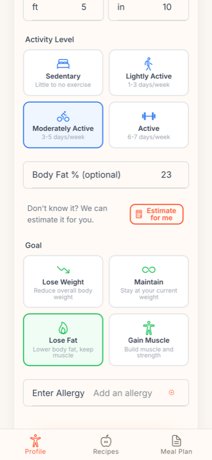
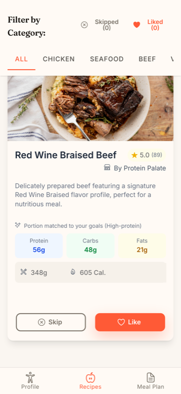
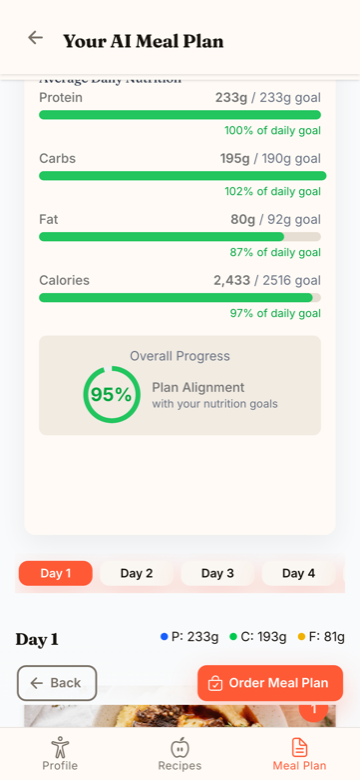
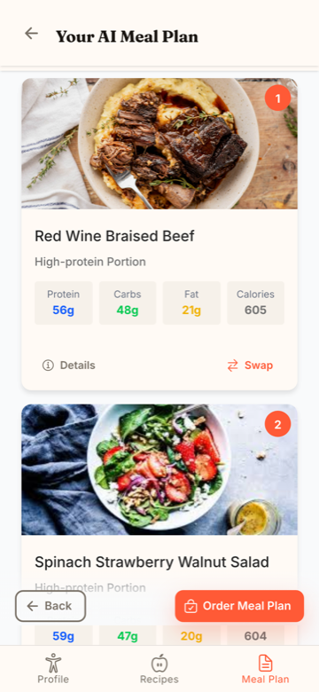
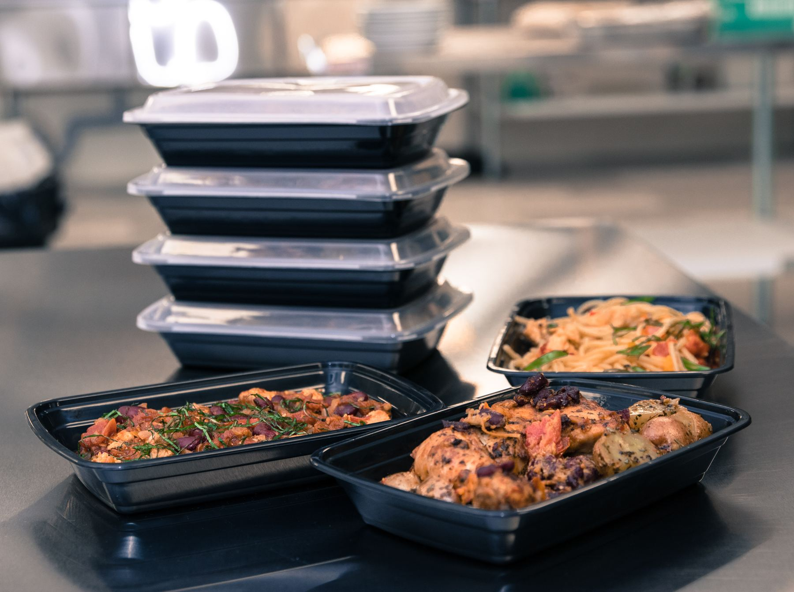
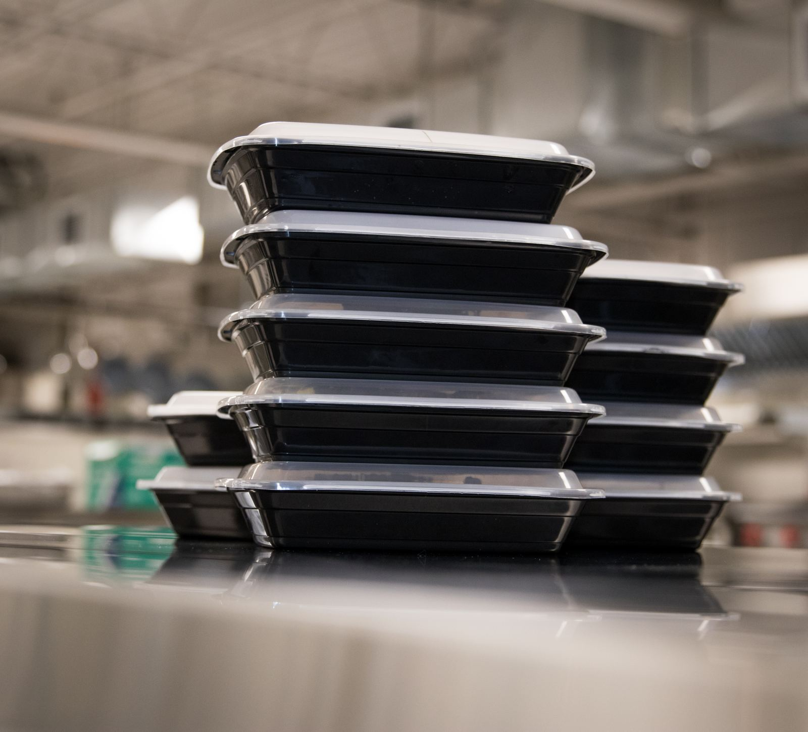

Tell Nutrics how you want to eat. We build your weekly plan, trusted local kitchens prepare it to Nutrics standards, and your meals arrive ready to go.
1 Your body, your goal
2 Built into your week
3 Your week, already cooked
Planning. Shopping. Cooking. Portioning. Choosing again tomorrow.
Your goals, preferences, schedule and dietary needs shape your weekly plan.
Nutrics selects meals that work with your nutrition goals, tastes and schedule, then has trusted local kitchens prepare them.
Rate a meal with one tap or tell Nutrics what you'd like different next week. Nutrics turns that feedback into adjustments to your plan.
How did this work for you?
“I liked the chicken meals, but I want to try different fish recipes next week.”
Nutrics uses what you liked, skipped, reordered and told us to improve your next plan — while keeping it aligned with your goals.
Based on your feedback
What this looks like in a normal week
Nutrics builds your weekly meal plan around your goals and tastes, then learns from what works to make the next one fit even better.




Nutrics builds a personalized meal plan around your nutrition targets, food preferences and the part of your week you want planned. Review the nutrition match and full price before you order.
Change your week and Nutrics recalculates the meals, nutrition match and price.
Nutrics suggests the plan that best fits your nutrition targets. You stay in control.
Order for your whole week or only the days and meals you need.
See how changes affect your Nutrition Match.
Review the full plan and exact total before confirming.
Skip, pause or cancel any time — no lock-in.
Leave your email and we'll let you know the moment Nutrics is live in your area.
No spam — just a heads up when we go live.
Clear standards for the food, nutrition information and kitchens behind every Nutrics plan.
Every Nutrics meal is built from standardized recipes, portions and preparation specifications, so the nutrition information in your plan stays consistent across culinary partners.
Every Nutrics meal shows its ingredients, portion and nutrition information before you order — so you can understand what's going into your plan.
See why meals were selected and how closely your generated plan matches your nutrition targets. When your feedback changes the next week, Nutrics shows you what changed.
We show ingredient and allergen information clearly and tell you what each culinary partner can accommodate. Because partner kitchens may be shared environments, we're transparent when cross-contact cannot be ruled out.
Nutrics culinary partners are onboarded against defined food-safety and handling requirements, carried through preparation and delivery.
Nutrics works with local culinary partners to prepare standardized meals from real menus. That gives your plan more variety while keeping portions, nutrition and production consistent.

Each partner follows defined recipes and portions so your plan stays consistent across kitchens.

Meals are produced in scheduled batches for your weekly plan — not made one order at a time.
Nutrics can combine meals from different culinary partners, giving you more choice without making every kitchen produce everything.
We built Nutrics to turn nutrition goals into meals that fit real life — without asking you to plan everything again every week.
Most people don't need another list of foods they should eat. The challenge is turning nutrition goals into something practical enough to follow in a real week.
Nutrics learns from your goals, preferences and feedback so you don't have to rebuild your meal plan from scratch every week.
Nutrics connects personalized planning with trusted local kitchens, turning nutrition targets into real meals that can actually be prepared and delivered.
Have questions about Nutrics or need help with your meal plan? We'd love to hear from you!
60 Atlantic Ave #200, Toronto
ON M6K 1X9
(905) 598-0114
hello@nutrics.ca
We're building the future of personalized eating. Partner with us early.
Culinary Partners Investor Overview Get in Touch